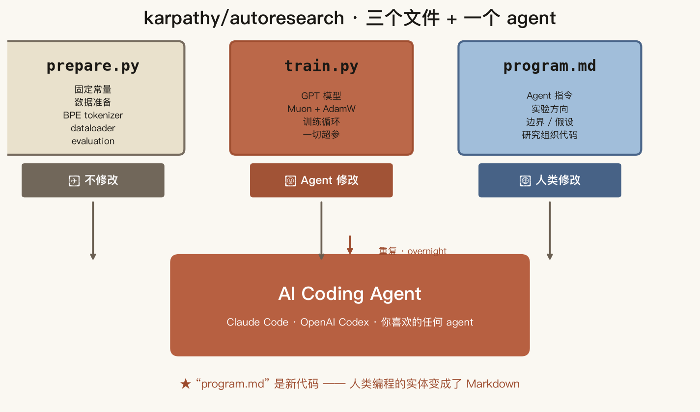
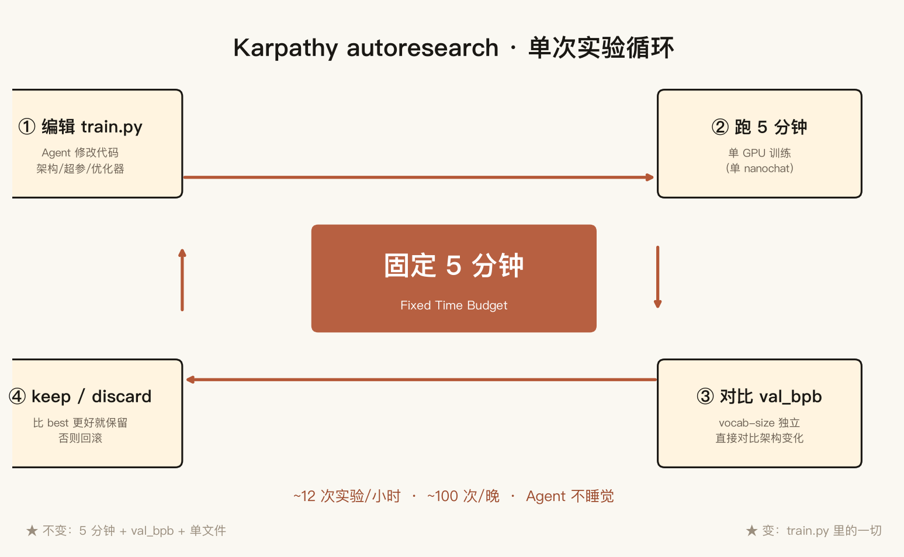
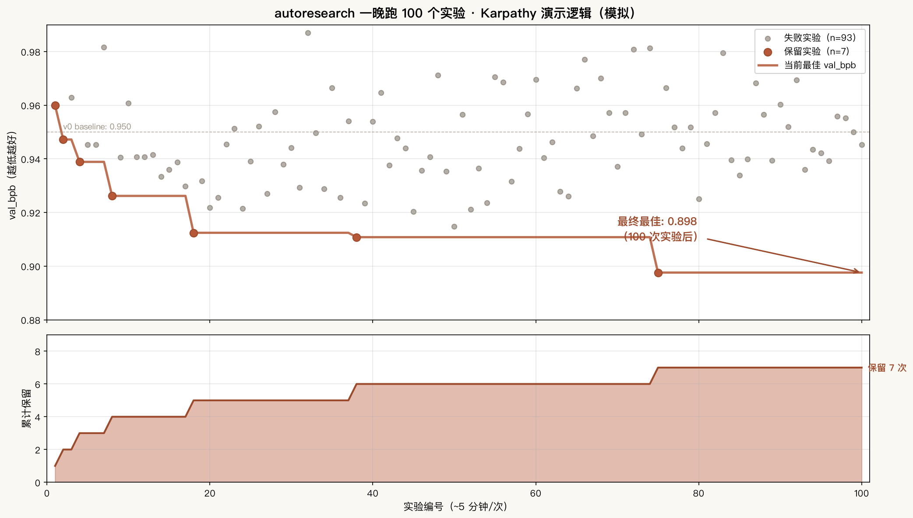
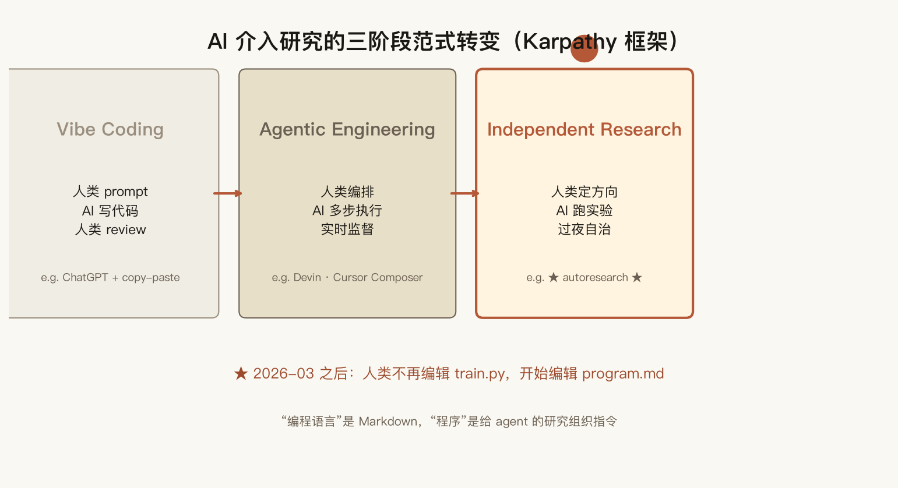
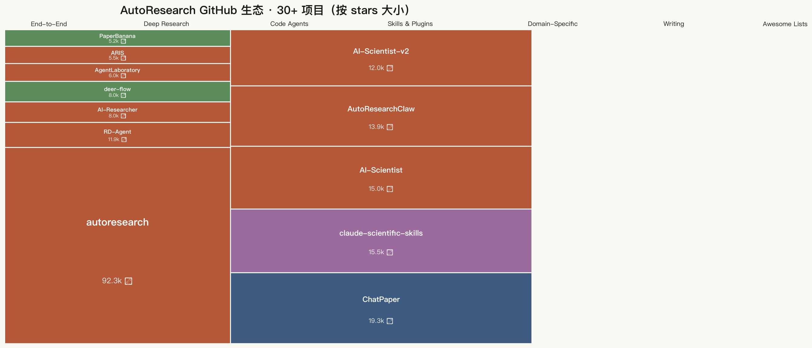

karpathy/autoresearch：3 文件 + 1 agent = 100 实验/晚

"研究现在完全属于跨计算集群的 AI agent swarm 的领域。"
2026 年 3 月，Andrej Karpathy 在 GitHub 上开源了 karpathy/autoresearch —— 630 行 Python，3 个文件，让一个 AI coding agent 在单 GPU 上跑一整夜的 ML 实验。
我读完整个项目后意识到：这不只是个工具，这是科研范式的转变。从此你不再写 train.py，你写 program.md。
三个文件 · 一个范式
Karpathy 把项目控制在最少文件数。三个文件，每个角色清晰：

prepare.py 冻结、train.py agent 修改、program.md 人类修改。中心是 AI coding agent（Claude Code / OpenAI Codex），围绕 program.md 的指令循环迭代。| 文件 | 内容 | 谁改 |
|---|---|---|
prepare.py | 固定常量、数据准备、BPE tokenizer、dataloader、evaluation | ❌ 冻结（任何人都不改） |
train.py | 完整 GPT 模型本体、Muon + AdamW 优化器、训练循环 | 🤖 Agent（agent 改这一个文件） |
program.md | 给 agent 的指令（实验方向、边界、假设、研究组织代码） | 👤 人类（这就是新的"代码"） |
设计原则是单文件范围 —— agent 只改 train.py。这让 diff 可读、scope 不爆炸、人类 review 友好。
"You are not programming Python. You are programming the program.md Markdown files that provide context to the AI agents and set up your autonomous research org." —— karpathy/autoresearch README
5 分钟 · 100 实验 · 一晚
循环很简单。Agent 编辑 train.py → 跑 5 分钟（固定时间，wall clock）→ 比较 val_bpb（bits per byte，越低越好）→ 更好就保留，否则回滚。

train.py → ② 跑 5 分钟（单 GPU）→ ③ 对比 val_bpb → ④ keep / discard。中心红框是设计核心：固定 5 分钟。一晚 100 个实验。为什么 5 分钟？为什么不跑到收敛？
Karpathy 给了两个理由：
- 实验可比 —— 5 分钟时间预算下，所有人的结果可以横向比较。你的 H100 和我的 H100 跑的是同一个时间约束下的最优模型。
- 防止 agent 死磕硬件 —— 没有时间限制，agent 会把模型越改越大、batch 越调越大，最后跟你那台 GPU 死磕到底。5 分钟是边界。
数学很简单：~12 次实验/小时，~100 次/晚。Agent 不睡觉，你一晚醒来看到 100 行实验日志 + 一个更好的模型。

三阶段范式转变
Karpathy 把这放进了一个更宽的框架：AI 介入研究的三阶段。

| 阶段 | 人类角色 | AI 角色 | 代表 |
|---|---|---|---|
| Vibe Coding | 写 prompt | 写代码、人类 review | ChatGPT + copy-paste |
| Agentic Engineering | 编排 | 多步执行、实时监督 | Devin、Cursor Composer |
| Independent Research | 定方向 | 跑实验、过夜自治 | ★ autoresearch ★ |
关键转变在第三阶段：人类从"操作工"变成"研究组织的设计者"。你的产出不再是"我跑了一次实验"，而是"我设计了让 agent 跑 100 次实验的研究组织"。
30+ 生态项目
autoresearch 不是孤例。2026-03 之后，整个生态爆炸：

| 类别 | 代表项目 | 做了什么 |
|---|---|---|
| End-to-End Systems | karpathy/autoresearch · SakanaAI/AI-Scientist-v2 · microsoft/RD-Agent · aiming-lab/AutoResearchClaw | 完整研究流水线：想法 → 文献 → 实验 → 论文 |
| Deep Research | kaixindelele/ChatPaper (19.3k) · stanford-oval/storm | AI 帮你读 paper、写综述 |
| Code Agents | WecoAI/AIDE · bytedance/deer-flow | 实验代码自动生成 + 调试 |
| Skills & Plugins | K-Dense-AI/claude-scientific-skills (15.5k) | "Skills" 范式（program.md 的进化） |
| Domain-Specific | snap-stanford/Biomni | 垂直领域：生物医学 |
其中两个项目最值得对比：
- karpathy/autoresearch（92.3k）— 极简，3 文件，单 GPU 训练循环，agent 编辑
train.py。 - aiming-lab/AutoResearchClaw（13.9k）— 23 阶段完整论文流水线，HITL 协作，4 层反伪造引用检查。
前者的价值是"教范式"，后者的价值是"做产品"。Karpathy 给的是种子，aiming-lab 把它长成了森林。
我的"金融版 autoresearch"
我之前做的 A 股情绪指数 项目 —— 13 成分、滚动分位数、5 年回测 —— 实际上就是一个手工版的 autoresearch。
对比一下：
| autoresearch 范式 | A 股情绪指数 v1 → v2 → v2 行业版 |
|---|---|
Agent 修改 train.py | 我修改 compute.py（v1 → v2 加 7 个成分） |
| 5 分钟固定时间预算 | 固定 5%/95% 滚动分位数规则 |
val_bpb 单一指标 | a_sentiment 0-100 分数 |
| Self-healing repair | AutoResearchClaw 的 repair.py（4 层反伪造） |
| 100 实验/晚 | 3 个手动循环（24.4 → 14.7 → 26.1 行业版） |
| Single iteration loop | v0.4.0 HITL Co-Pilot |
我手动跑了 3 个版本（大盘版 → 行业版 v1 → 行业版 v2）。如果用 autoresearch 的范式 + 写一个 program.md，一晚 100 个版本不是梦。
局限：创造力的天花板
autoresearch 自动化方法论。但 Karpathy 自己也很清楚：创造力的天花板还在人那里。
- 选哪个研究方向值得追 —— agent 不会替你判断
- 框架化研究问题足够清晰 —— agent 才能 act on it
- 认识一个负面结果的信号价值 —— 何时"失败"比"成功"更有趣
- 知道 metric 本身错了，不是超参错了 —— 这种 meta-cognition 极难自动化
DataCamp 的原话："AutoResearch right now automates the methodical part of ML research: running and evaluating hundreds of small experiments. The creative part — picking the right research direction, framing the question — still needs human intent."
100 实验/晚意味着 100 次确认你 prior 的机会，不是 100 个发现。AutoResearch 是你研究品味的放大器，不是替代品。
5 件立即可做的事
如果你看完也想动手：
- 装上 uv：
curl -LsSf https://astral.sh/uv/install.sh | sh - Clone & 试单次：
git clone https://github.com/karpathy/autoresearch && cd autoresearch && uv sync && uv run prepare.py && uv run train.py（5 分钟） - 写第一份
program.md：用 Markdown 描述你的实验方向 —— 这就是"研究组织代码" - 拉 Claude Code 或 OpenAI Codex：在仓库里启动，prompt 它"读 program.md 然后开始"
- 让它跑一晚：第二天 review
results.tsv+ diff 历史
完整项目代码：github.com/karpathy/autoresearch（MIT，630 LOC，92.3k stars）。
三个 Takeaway
program.md是新代码。你不再写 Python，你写给 agent 的研究组织指令。3 文件 + 1 agent + 5 分钟 = 100 实验/晚。- 5 分钟不是限制，是设计。固定时间预算让实验可比，让 agent 不会死磕硬件，让你的 H100 和别人的 H100 跑出可比较的结果。
- AutoResearch 自动化方法论，不自动化创造力。选方向、框架化问题、识别负面结果的信号价值 —— 这些还是人的领域。AutoResearch 是研究品味的放大器，不是替代品。
完整调研（Obsidian 笔记）
更长的深度研究版本在 Obsidian vault 里：
- 主笔记：AutoResearch · GitHub Ecosystem Deep Dive（32 KB · 9 章节）
- 索引：AutoResearch Ecosystem · 索引
- 速查表：30+ 项目对比速查表